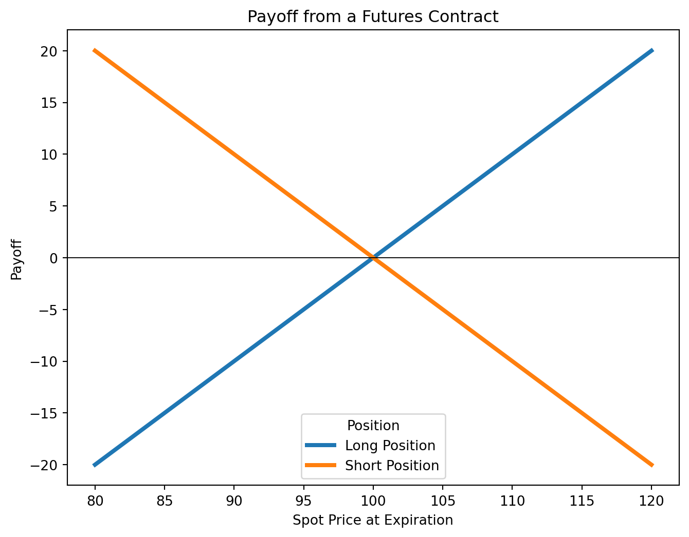

2 Forwards and Futures
References
- HULL, John. Options, futures, and other derivatives. Ninth edition. Harlow: Pearson, 2018. ISBN 978-1-292-21289-0.
- Chapter 1 - Introduction
- Chapter 2 - Mechanics of futures markets
- Chapter 3 - Hedging Strategies Using Futures
- PIRIE, Wendy L. Derivatives. Hoboken: Wiley, 2017. CFA institute investment series. ISBN 978-1-119-38181-5.
- Chapter 1 - Derivative Markets and Instruments
Learning Outcomes:
- Understand forwards and futures, including their characteristics, payoff structures, and key differences.
- Gain knowledge of exchange and over-the-counter (OTC) markets, focusing on their functionalities and distinctions.
- Learn the basics of hedging with futures, managing basis risk, and applying cross hedging techniques.
- Explore the role of stock index futures in portfolio risk management and speculation.
2.1 Forwards and Futures Characteristics
Definition
Forwards and futures are agreements where two parties commit to exchange an asset at a set price on a future date.
Forward/Futures Price:
- The agreed-upon price is fixed when the contract starts.
- Different expiration dates can lead to different prices based on market expectations.
Positions:
- Long Position: The buyer promises to purchase the asset.
- Benefits if the asset’s price goes up.
- Short Position: The seller promises to sell the asset.
- Benefits if the asset’s price goes down.
Risk Exposure:
- Long Position: Loss can be large if the asset’s price drops significantly.
- Short Position: Loss can be unlimited if the asset’s price rises dramatically.
Contract Details:
- Asset Specification: What asset is being traded and any quality standards.
- Delivery Terms: Where and when the asset will be delivered.
Settlement Methods:
- Futures Contracts: Settled daily (marking to market).
- Forward Contracts: Settled at the end of the contract term by comparing the agreed price with the final market price.
2.2 Payoff From a Forward Contract
- Start of Contract: Time = \(0\), with an initial spot price \(S_0\).
- End of Contract: Time = \(T\), with a final spot price \(S_T\).
- Forward Price: The fixed price agreed upon, \(F_0\).
Long Position (Buyer):
- Profit if \(S_T\) is higher than \(F_0\); loss if it is lower.
\[ \text{Payoff}_\text{Long} = S_T - F_0 \]
Short Position (Seller):
- Profit if \(S_T\) is lower than \(F_0\); loss if it is higher.
\[ \text{Payoff}_\text{Short} = - (S_T - F_0) \]
Example: Gold Purchase Agreement
Barbara Nix agreed to buy 1 kilogram of gold at a price of $38,000 per kilo from Metals Inc. in 90 days. After 90 days, the spot price of gold reached $38,500 per kilo. What is the payoff for each party?
For the Long Party (Barbara Nix): The gain is $500, calculated as \[S_T - F_0 = \$38,500 - \$38,000 = \$500\]
For the Short Party (Metals Inc.): The loss is $500 \[-(S_T - F_0) = - (\$38,500 - \$38,000) = -\$500\]
2.3 Exchange Markets (Futures)
Exchange markets provide a regulated, standardized environment for trading futures contracts. They enable participants to hedge risks or speculate on market movements.
Regulation:
The Commodity Futures Trading Commission (CFTC) in the U.S. oversees these markets to protect participants and ensure fair trading.Contract Specifications:
Futures contracts are standardized, clearly defining the asset, quality, delivery location, and date. For example, see CME Group’s Gold Futures.Settlement:
Most futures contracts are closed out before maturity, avoiding physical delivery through offsetting trades.- Physical Delivery: When required, contracts specify the deliverable asset, delivery location, and timeframe. Typically, the short (seller) sets the delivery details.
- Cash Settlement: Some contracts, such as stock index futures, settle in cash rather than through the physical delivery of assets.
- Physical Delivery: When required, contracts specify the deliverable asset, delivery location, and timeframe. Typically, the short (seller) sets the delivery details.
Market Quotes and Trading Activity
- Settlement Price: The closing price used for daily settlements.
- Open Interest: The total number of outstanding contracts (either long or short), reflecting market liquidity.
- Trading Volume: The total number of contracts traded during a day, regardless of changes in open interest.
Example of Open Interest and Trading Volume
Imagine a wheat futures market that starts the day with 1,000 open contracts. During the day, the following transactions occur:
- Transaction 1: A new buyer and a new seller agree on a contract.
- Open Interest: Increases by 1 (total: 1,001).
- Trading Volume: +1 contract.
- Transaction 2: An existing long position is sold to a new participant.
- Open Interest: Remains at 1,001 (one party is simply replaced).
- Trading Volume: +1 contract.
- Transaction 3: Two new participants (a buyer and a seller) enter with 5 new contracts.
- Open Interest: Increases by 5 (total: 1,006).
- Trading Volume: +5 contracts.
- Transaction 4: An existing buyer and seller close their positions with an offsetting contract.
- Open Interest: Decreases by 1 (total: 1,005).
- Trading Volume: +1 contract.
Final Totals:
- Open Interest: 1,005 contracts (active positions at the end of the day).
- Trading Volume: 8 contracts traded throughout the day.
This example shows that open interest reflects the number of active contracts, while trading volume is the total number of contracts exchanged during the day.
Daily Settlement and Margins
Mark-to-Market:
The clearinghouse adjusts each trader’s margin account daily to reflect gains or losses based on the settlement price.Margin Requirements:
- Initial Margin: The deposit required to open a position.
- Maintenance Margin: The minimum balance that must be maintained. Falling below this triggers a margin call (additional funds must be deposited to meet the initial margin requirement).
- Initial Margin: The deposit required to open a position.
Example: Margin and Margin Call
Alex enters a crude oil futures contract valued at $60,000.
- Initial Margin (5%): $3,000
- Maintenance Margin (3%): $1,800
If the contract value drops to $58,000, Alex loses $2,000, reducing his margin account to $1,000—below the maintenance margin. He then receives a margin call and must deposit an additional $2,000 to restore his account to $3,000.
If Alex fails to meet the margin call, his position may be closed out by the broker to limit further losses.
2.4 OTC Markets (Forwards)
Over-the-Counter (OTC) markets allow forward contracts and other derivatives to be traded directly between two parties without an exchange. This setup offers flexibility and customization but traditionally lacks the transparency and regulation found in exchange-traded markets.
Pre-Crisis Era:
- OTC markets operated with minimal oversight, contributing to systemic risk before the 2007–2008 financial crisis.
Post-Crisis Reforms:
- In response to the crisis, regulations such as the Dodd-Frank Act (U.S.) and EMIR (EU) were introduced.
- These reforms require reporting OTC transactions and often mandate central clearing to enhance transparency and reduce risk.
Collateral Requirements
To manage counterparty risk in OTC markets, collateral is required:
- Initial Margin:
- An upfront deposit to cover potential losses immediately after a default.
- Variation Margin:
- Additional funds required to adjust for daily price changes, ensuring the collateral always matches the current exposure.
Clearing Mechanisms
Bilateral Clearing:
- Each transaction is settled directly between the two parties.
- This method allows customization but lacks centralized risk management.
Central Clearing:
- A Central Counterparty (CCP) steps in between the buyer and seller, reducing counterparty risk by standardizing margin requirements and daily mark-to-market adjustments.
- Although OTC contracts are customized, central clearing helps bring some uniformity to risk management and settlement processes.
2.5 Hedging with Futures and Managing Basis Risk
Hedging with futures is a strategy used to lock in prices for assets you plan to buy or sell in the future, helping to manage price volatility in commodities, currencies, interest rates, and more.
Long Futures Hedge:
Used when you expect to purchase an asset. Locking in a price now protects against future price increases.Short Futures Hedge:
Used when you plan to sell an asset. Locking in a price now protects against future price decreases.
Advantages of hedging:
- Business Focus: Reduces exposure to market risks, allowing companies to concentrate on their core activities.
- Cost Predictability: Helps with budgeting by stabilizing costs and revenues.
- Risk Management: Mitigates risks from volatile market factors.
Disadvantages of hedging:
- Shareholder Autonomy: Some argue that shareholders can manage risks through personal diversification.
- Competitive Dynamics: Hedging may add extra risk if competitors do not hedge.
- Complexity: Hedges can be difficult to implement and explain, especially if outcomes differ from expectations.
Understanding Basis Risk
Definition
Basis risk is the uncertainty that the difference between the current (spot) price and the futures price will not behave as expected when the hedge is closed.
This risk arises from:
- Asset Mismatch: The asset being hedged may not exactly match the underlying asset of the futures contract.
- Timing Uncertainty: Variations in the timing of the actual purchase or sale can affect the hedge.
- Early Contract Closure: Exiting a futures contract before its delivery date can alter the expected price difference.
Mitigation Strategies:
- Delivery Month Selection: Choose a contract with a delivery month as close as possible to, but after, your expected transaction date.
- Cross Hedging: If a direct futures contract isn’t available, use a contract with a price that closely correlates with the asset’s price.
Hedging Examples
Long Hedge Example for Asset Purchase
- Initial Futures Price (\(F_1\)): \(88.0\)
- Futures Price at Purchase (\(F_2\)): \(89.1\)
- Spot Price at Purchase (\(S_2\)): \(90.0\)
- Basis at Purchase (\(b_2\)): \(S_2 - F_2 = 0.9\)
Outcome:
- Asset cost: \(\$90.0\)
- Gain from futures: \(F_2 - F_1 = 1.1\)
- Net cost: \(\$90.0 - \$1.1 = \$88.9\)
Short Hedge Example for Asset Sale
- Initial Futures Price (\(F_1\)): \(0.98\)
- Futures Price at Sale (\(F_2\)): \(0.925\)
- Spot Price at Sale (\(S_2\)): \(0.92\)
- Basis at Sale (\(b_2\)): \(S_2 - F_2 = -0.005\)
Outcome:
- Asset sale price: \(\$0.92\)
- Gain from futures: \(F_1 - F_2 = 0.055\)
- Net sale price: \(\$0.92 + \$0.055 = \$0.975\)
2.6 Cross Hedging and Tailing Adjustments
Definition
Cross hedging is used when no futures market exists for the asset you want to hedge. Instead, you use a futures contract on a correlated asset. The effectiveness of a cross hedge depends on how closely the prices of the two assets move together.
Optimal Hedge Ratio and Number of Contracts
The optimal hedge ratio (\(h^*\)) without daily settlement adjustments is given by:
\[ h^{*} = \rho \frac{\sigma_S}{\sigma_F} \]
- \(\rho\) is the correlation coefficient between changes in the spot price (\(\Delta S\)) and the futures price (\(\Delta F\)).
- \(\sigma_S\) is the standard deviation of the changes in the spot price.
- \(\sigma_F\) is the standard deviation of the changes in the futures price.
Once \(h^*\) is determined, the optimal number of futures contracts (\(N^*\)) needed is calculated as:
\[ N^* = h^* \times \frac{Q_A}{Q_F} \]
- \(Q_A\) is the size of the position being hedged (in units).
- \(Q_F\) is the size of one futures contract (in units).
Example: Hedging Jet Fuel with Heating Oil Futures
An airline plans to purchase 2 million gallons of jet fuel in one month and decides to hedge using heating oil futures.
- \(\sigma_F = 0.0313\), \(\sigma_S = 0.0263\), and \(\rho = 0.928\)
- Compute the hedge ratio:
\[ h^* = 0.928 \times \frac{0.0263}{0.0313} \approx 0.78 \] - One heating oil futures contract covers 42,000 gallons.
- Optimal number of contracts:
\[ N^* = 0.78 \times \frac{2,000,000}{42,000} \approx 37 \] Thus, the airline should use about 37 heating oil futures contracts.
Daily Settlement and Tailing Adjustments
Futures contracts are settled daily, which can affect the hedge’s performance. To account for these daily changes, we use an adjusted optimal hedge ratio (\(\hat{h}\)):
\[ \hat{h} = \hat{\rho} \frac{\hat{\sigma_S}}{\hat{\sigma_F}} \]
- \(\hat{\rho}\) is the correlation between the daily percentage changes in spot and futures prices.
- \(\hat{\sigma_S}\) and \(\hat{\sigma_F}\) are the standard deviations of these daily percentage changes.
Using \(\hat{h}\), the adjusted optimal number of futures contracts is:
\[ N^* = \hat{h} \times \frac{V_A}{V_F} \]
- \(V_A\) is the total value of the position being hedged (spot price \(\times\) quantity).
- \(V_F\) is the value of one futures contract (futures price \(\times\) contract size).
Example: Hedging with Tailing Adjustments
A transportation company, TransCo, needs to purchase 500,000 gallons of diesel in one month. With no diesel futures available, it hedges using heating oil futures (each covering 42,000 gallons).
- Diesel spot price: \(\$3.00\) per gallon
- Heating oil futures price: \(\$2.90\) per gallon
- Correlation of daily changes, \(\hat{\rho}\): \(0.9\)
- Daily volatility: \(\hat{\sigma_S} = 1.5\%\) for diesel, \(\hat{\sigma_F} = 1.8\%\) for heating oil
Step 1: Calculate the adjusted hedge ratio
\[
\hat{h} = 0.9 \times \frac{0.015}{0.018} = 0.75
\]
Step 2: Determine the values
\[
V_A = \$3.00 \times 500,000 = \$1,500,000
\] \[
V_F = \$2.90 \times 42,000 = \$121,800
\]
Step 3: Calculate the optimal number of contracts
\[
N^* = 0.75 \times \frac{1,500,000}{121,800} \approx 9.23
\]
Since partial contracts aren’t possible, TransCo would hedge with 9 contracts to avoid over-hedging.
2.7 Stock Index Futures
Stock index futures are powerful tools for managing portfolio risk. They allow investors to hedge against market fluctuations or adjust their portfolio’s sensitivity to market movements without altering its actual composition.
To determine the number of futures contracts needed, use:
\[ N^* = (\beta^* - \beta) \times \frac{V_A}{V_F} \]
- \(V_A\): Portfolio value.
- \(\beta\): Current portfolio beta.
- \(\beta^*\): Target beta (if fully hedging, \(\beta^* = 0\)).
- \(V_F\): Value of one futures contract (e.g., futures price multiplied by the contract multiplier).
- A negative \(N^*\) means shorting futures; a positive value means going long.
This approach allows investors to either fully hedge their portfolio (\(\beta^* = 0\)) or fine-tune their market exposure based on strategic objectives.
Example: Hedging a Portfolio
A portfolio valued at $5 million has a beta of 1.5. Using S&P 500 futures, where each contract is worth $250,000, to fully hedge (\(\beta^* = 0\)):
\[ N^* = (0 - 1.5) \times \frac{5,000,000}{250,000} = -30 \]
Shorting 30 futures contracts would hedge the portfolio against market fluctuations.
Example: Adjusting Portfolio Beta
A portfolio manager wants to lower a $10 million portfolio’s beta from 1.2 to 0.8. Using an index futures contract priced at 3,000 points with a multiplier of $250 (thus, \(V_F = 250 \times 3,000 = \$750,000\)):
\[ N^* = (0.8 - 1.2) \times \frac{10,000,000}{750,000} = -0.4 \times 13.33 \approx -5.33 \]
Rounding to -5 indicates shorting 5 contracts to reduce the portfolio beta.
Additional Hedging Considerations
Why Hedge with Stock Index Futures?
- Market Timing: Allows an exit from market exposure without selling underlying assets, avoiding transaction costs and capital gains taxes.
- Risk Management: Offers precise control over market risk.
- Performance Focus: Helps ensure returns are driven by the performance of selected assets rather than broad market movements.
Tip
Imagine your portfolio’s stocks have an average beta of 1.0, aligning their performance with the market. Yet, you’re confident these stocks will surpass market returns in any scenario. By hedging, you secure returns at the risk-free rate plus any outperformance of your stocks over the market. This strategy minimizes market volatility’s impact, ensuring your portfolio’s gains are primarily due to your stock selection skills.
Stack and Roll Strategy
This strategy involves rolling futures contracts forward to maintain continuous hedging:
- Process:
- Initiate futures contracts for a specific time horizon.
- Before maturity, close out the contracts and replace them with new ones.
- Risks:
- Liquidity issues and the possibility of realizing losses on the hedge while gains in the underlying assets remain unrealized.
Warning
The Metallgesellschaft (MG) case in the early 1990s is a reminder that rolling hedges can lead to severe liquidity issues. MG’s strategy of hedging long-term exposure with short-dated futures resulted in massive margin calls and a $1.33 billion loss when oil prices dropped, forcing the closure of hedge positions.
2.8 Practice Questions and Problems
Fundamentals of Futures Trading
- What are the most important aspects of the design of a new futures contract?
- The party with a short position in a futures contract sometimes has options as to the precise asset that will be delivered, where delivery will take place, when delivery will take place, and so on. Do these options increase or decrease the futures price? Explain your reasoning.
- What do you think would happen if an exchange started trading a contract in which the quality of the underlying asset was incompletely specified?
- “Speculation in futures markets is pure gambling. It is not in the public interest to allow speculators to trade on a futures exchange.” Discuss this viewpoint.
Open Interest and Trading Volume
- Distinguish between the terms open interest and trading volume.
- “When a futures contract is traded on the floor of the exchange, it may be the case that the open interest increases by one, stays the same, or decreases by one.” Explain this statement.
- Why does the open interest usually decline during the month preceding the delivery month?
- On a particular day, there were 2,000 trades in a particular futures contract. This means that there were 2000 buyers (going long) and 2000 sellers (going short). Of the 2,000 buyers, 1,400 were closing out positions and 600 were entering into new positions. Of the 2,000 sellers, 1,200 were closing out positions and 800 were entering into new positions. What is the impact of the day’s trading on open interest?
Margin Mechanics in Futures Trading
- Explain how margin accounts protect investors against the possibility of default.
- Suppose that you enter into a short futures contract to sell July silver for $17.20 per ounce. The size of the contract is 5,000 ounces. The initial margin is $4,000, and the maintenance margin is $3,000. What change in the futures price will lead to a margin call? What happens if you do not meet the margin call?
Solution
\(S = \$17.40\)
- A trader buys two July futures contracts on frozen orange juice. Each contract is for the delivery of 15,000 pounds. The current futures price is 160 cents per pound, the initial margin is $6,000 per contract, and the maintenance margin is $4,500 per contract. What price change would lead to a margin call? Under what circumstances could $2,000 be withdrawn from the margin account?
Solution
\(S = 166.67\) cents
- A company enters into a short futures contract to sell 5,000 bushels of wheat for 750 cents per bushel. The initial margin is $3,000 and the maintenance margin is $2,000. What price change would lead to a margin call? Under what circumstances could $1,500 be withdrawn from the margin account?
Solution
Margin call: \(S = 770\) cents; Withdraw $1500: \(S = 720\) cents
Basics of Hedging with Futures
- Under what circumstances are (a) a short hedge and (b) a long hedge appropriate?
- Explain what is meant by basis risk when futures contracts are used for hedging.
- Explain what is meant by a perfect hedge. Does a perfect hedge always lead to a better outcome than an imperfect hedge? Explain your answer.
- Does a perfect hedge always succeed in locking in the current spot price of an asset for a future transaction? Explain your answer.
- “For an asset where futures prices for contracts on the asset are usually less than spot prices, long hedges are likely to be particularly attractive.” Explain this statement.
Advanced Hedging Scenarios and Strategies
- Sixty futures contracts are used to hedge an exposure to the price of silver. Each futures contract is on 5,000 ounces of silver. At the time the hedge is closed out, the basis is $0.20 per ounce. What is the effect of the basis on the hedger’s financial position if (a) the trader is hedging the purchase of silver and (b) the trader is hedging the sale of silver?
- In the corn futures contract, the following delivery months are available: March, May, July, September, and December. State the contract that should be used for hedging when the expiration of the hedge is in a) June, b) July, and c) January.
- Suppose that the standard deviation of quarterly changes in the prices of a commodity is $0.65, the standard deviation of quarterly changes in a futures price on the commodity is $0.81, and the coefficient of correlation between the two changes is 0.8. What is the optimal hedge ratio for a three-month contract? What does it mean?
Solution
\(h = 64.2\%\)
- The standard deviation of monthly changes in the spot price of live cattle is 1.2 (in cents per pound). The standard deviation of monthly changes in the futures price of live cattle for the closest contract is 1.4. The correlation between the futures price changes and the spot price changes is 0.7. It is now October 15. A beef producer is committed to purchasing 200,000 pounds of live cattle on November 15. The producer wants to use the December live-cattle futures contracts to hedge its risk. Each contract is for the delivery of 40,000 pounds of cattle. What strategy should the beef producer follow?
Solution
Long \(3\) contracts.
Practical Concerns and Risk Management
- Give three reasons why the treasurer of a company might not hedge the company’s exposure to a particular risk.
- A corn farmer argues “I do not use futures contracts for hedging. My real risk is not the price of corn. It is that my whole crop gets wiped out by the weather.” Discuss this viewpoint. Should the farmer estimate his or her expected production of corn and hedge to try to lock in a price for expected production?
- Imagine you are the treasurer of a Japanese company exporting electronic equipment to the United States. Discuss how you would design a foreign exchange hedging strategy and the arguments you would use to sell the strategy to your fellow executives.
- A futures contract is used for hedging. Explain why the daily settlement of the contract can give rise to cash flow problems.
Hedging with Stock and Commodity Futures
- A company has a $20 million portfolio with a beta of 1.2. It would like to use futures contracts on a stock index to hedge its risk. The index futures is currently standing at 1080, and each contract is for delivery of $250 times the index. What is the hedge that minimizes risk? What should the company do if it wants to reduce the beta of the portfolio to 0.6? What should the company do if it wants to increase the beta of the portfolio to 1.5?
Solution
- short \(89\) contracts
- short \(44\) contracts to reduce beta
- long \(22\) contracts to increase beta
- On July 1, an investor holds 50,000 shares of a certain stock. The market price is $30 per share. He decides to use the September Mini S&P 500 futures contract. The index is currently 1,500 and one contract is for delivery of $50 times the index. The beta of the stock is 1.3. What strategy should the investor follow? Under what circumstances will it be profitable?
Solution
Short \(26\) contracts.
- It is now June. A company knows that it will sell 5,000 barrels of crude oil in September. It uses the October CME Group futures contract to hedge the price it will receive. Each contract is on 1,000 barrels of “light sweet crude”. What position should it take? What price risks is it still exposed to after taking the position?